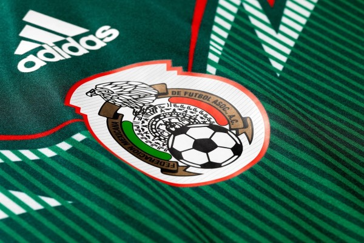
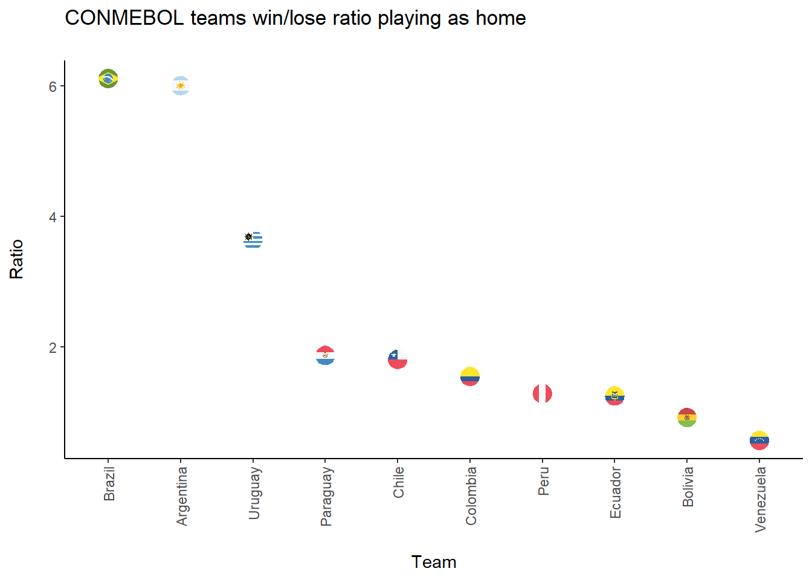
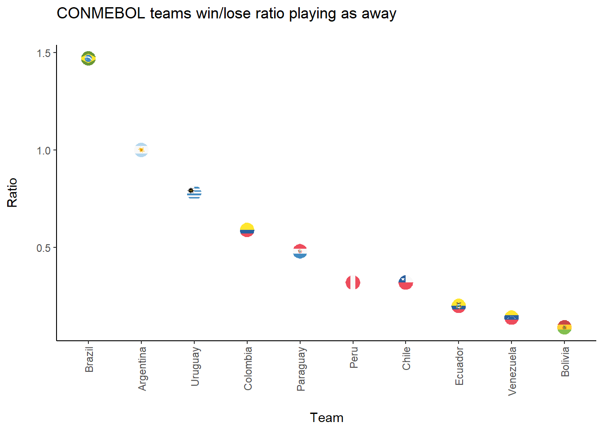
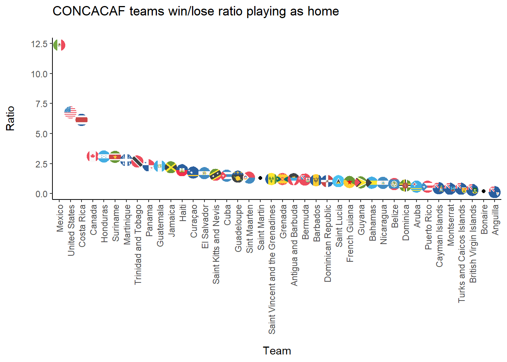
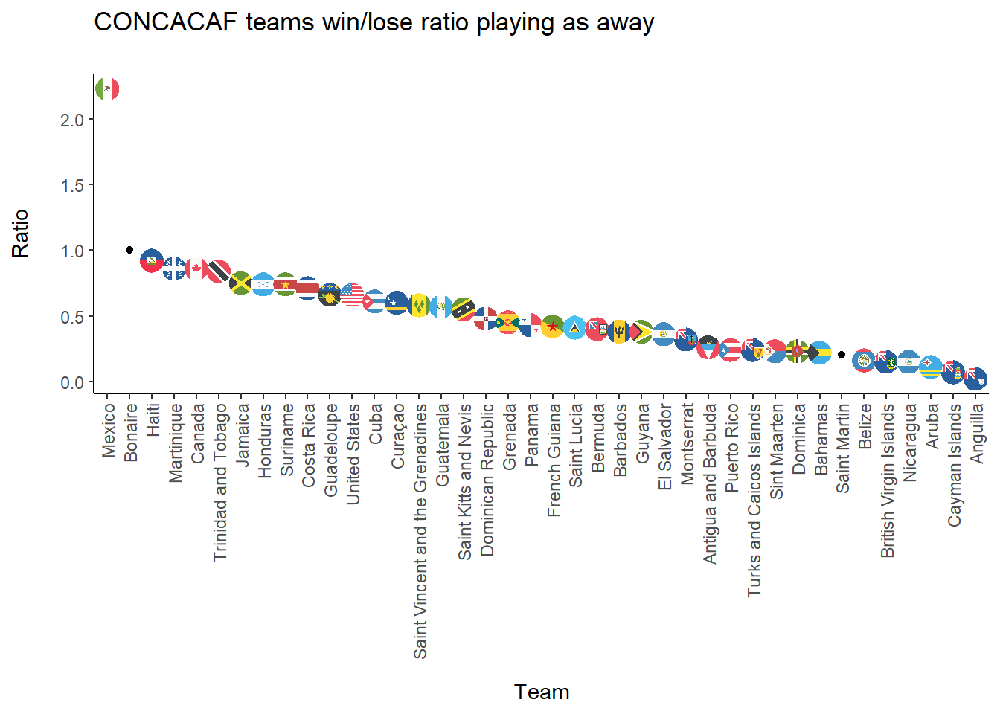
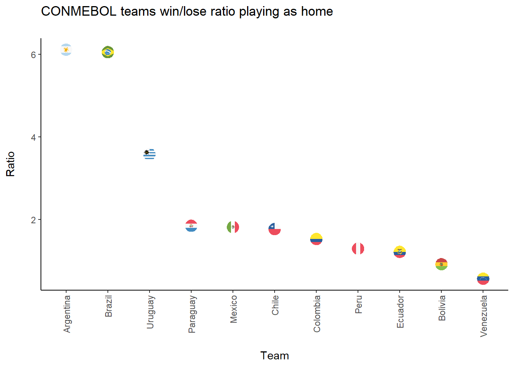
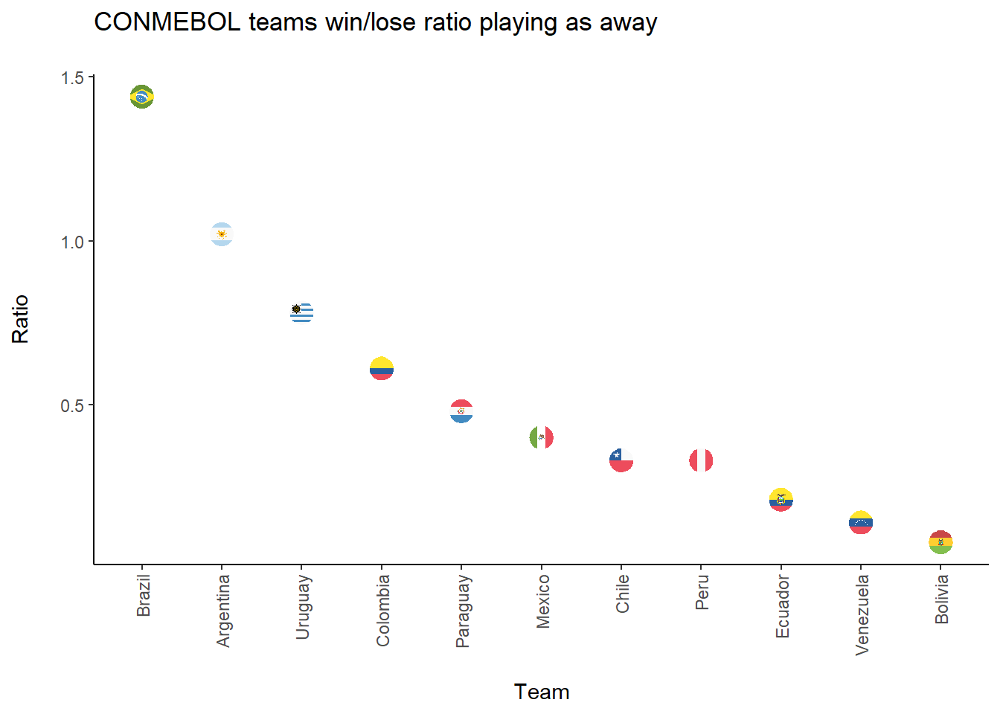

Wallabi syndrome
Some background
FIFA, based in Zurich, Switzerland, is generally in charge of regulating and organizing the most important international soccer competitions, as well as resolving disputes between the different federations and, in turn, giving support to them. It is made up of more than two hundred federations and associations from around the world, which in turn are grouped into 6 major soccer confederations.
These soccer confederations result from the associations of the different FIFA members, either because they share common interests or because of location. They work, in their respective fields of action, for the organization and achievement of their objectives in the world of football. They are autonomous bodies but at the same time they respect the statutes and regulations established by FIFA and work in collaboration with it.
The six soccer confederations that make up FIFA include all the soccer teams in the world. They will be described below:
UEFA (Union of European Football Federations), is the football confederation of European countries, made up of 55 members and whose headquarters are also in Switzerland. It is without a doubt the most authoritative body in European football and one of the largest confederations in FIFA.
CAF (African Football Confederation), is the confederation with the second largest number of members after the European one, specifically it integrates 54 associations throughout the African continent. And in turn divides its territory into 6 regions (North, West A, West B, Central, Central-East and South).
AFC (Asian Football Confederation) is the regulatory body for Asian football. It is headquartered in Kuala Lumpur, Malaysia and consists of 47 members, including most of the countries in Asia and also interestingly Australia.
CONCACAF (North, Central America and Caribbean Association Football Confederation), made up of 41 members from three different zones, North America, Central America and the Caribbean. It is based in Miami and its main mission is the organization of soccer in its different aspects throughout the region from Canada to French Guiana, passing through Suriname.
OFC (Oceania Football Confederation), is the youngest of the six confederations. Made up of 14 members and based in Auckland, New Zealand, and despite what one might think, Australia is not part of this confederation.
CONMEBOL (South American Football Confederation), is the confederation with the smallest number of members, made up of only 10 associations that represent the most important countries in South America (Argentina, Bolivia, Brazil, Chile, Paraguay, Colombia, Venezuela, Peru , Uruguay and Ecuador).
Case of study
On February 2, 2015, Australia became the Asian soccer champion. Probably, some people wonder why this team is an Asian champion if it is a country from Oceania.
When playing in the Oceania Confederation, Australia was used to winning almost every game almost without breaking a sweat, with great superiority. In fact, the ‘aussies’ hold the record for having achieved the biggest win in an international match after the 31-0 endorsement of American Samoa on April 11, 2001.
This win explains well why Australia asked to change from playing in the Oceania Confederation to playing in Asia. In the qualifying phases for the World Cup, Australia used to win, on most occasions, very easily and without much effort. However, contrary to what happens in other confederations, in Oceania no one has a direct ticket to the World Cup despite having been the best in qualifying.
The best in Oceania to get into a World Cup had to pass one last test: win in a qualifying round a team that could be South American or Asian, since it could vary depending on the year. This meant that it was very difficult for Australia to get into the World Cup because either they had a South American rival of a much higher level than them (as in 1993 with Argentina or in 2001 with Uruguay), or when they had to face a Asian team (as in 1997 against Iran), which were more equal to their quality, what happened is that they ended up losing because they accused of not having competitive tension in Oceania.
That was until Australia said enough was enough and proposed in 2005 to switch to the Asian Confederation. Surprisingly, they willingly accepted the offer and on March 23, 2005 they said yes to Australia. “I think Australia’s arrival is beneficial for everyone, because it will improve the image of Asian football,” said Mohamed Bin Hamman, president of the Asia Confederation at the time. “We have long had the objective of joining the Asian Football Confederation, as our current affiliation puts Australia in an abnormal situation,” said Frank Lowy, his namesake in the Australian Federation.
The good news kept coming for the Australians when on April 17 of that same year from Oceania they also gave the ok to this peculiar change. “Australia’s transfer to Asia is in the hands of the executive committee and I fully support it as it will help further develop football in Australia. At the same time it will open up many opportunities for other members of the Oceania confederation,” Oceania Football Confederation President Reynald Temarii said in a statement.
However, not all oceanic countries liked this decision. New Zealand, through Graham Seatler, president of its Federation, made its discomfort public: “We are the weakest of the FIFA confederations and without Australia we will be even weaker.” Their complaints fell on deaf ears, as FIFA also gave the OK to Australia’s change on June 30. In this way, as of January 1, 2006, they were already officially registered as an Asian member and in February of that year they played their first official match in this confederation in the qualification for the 2007 Asian Cup.
The curious circumstance arises that one of the last things that Australia achieved as a member of the Oceanic Confederation was to qualify for the 2006 World Cup, after winning their qualifying tie against Uruguay on penalties, something that an Oceania team could not achieve. since 1974.
I gave myself the task of looking for a similar situation in the world, and I found the Mexican case.
Methods
We’ll use R in order to do our further analyses. I’ll leave the code below each paragraph.
Code
if (!require("pacman")) install.packages("pacman")Loading required package: pacmanCode
pacman::p_load(tidyverse, countrycode, forcats, ggflags)The data set used in this analysis was taken from Kaggle.
Code
data <- read.csv(file = "data/results.csv",sep = ",")
head(data, 10) date home_team away_team home_score away_score tournament city
1 1872-11-30 Scotland England 0 0 Friendly Glasgow
2 1873-03-08 England Scotland 4 2 Friendly London
3 1874-03-07 Scotland England 2 1 Friendly Glasgow
4 1875-03-06 England Scotland 2 2 Friendly London
5 1876-03-04 Scotland England 3 0 Friendly Glasgow
6 1876-03-25 Scotland Wales 4 0 Friendly Glasgow
7 1877-03-03 England Scotland 1 3 Friendly London
8 1877-03-05 Wales Scotland 0 2 Friendly Wrexham
9 1878-03-02 Scotland England 7 2 Friendly Glasgow
10 1878-03-23 Scotland Wales 9 0 Friendly Glasgow
country neutral
1 Scotland FALSE
2 England FALSE
3 Scotland FALSE
4 England FALSE
5 Scotland FALSE
6 Scotland FALSE
7 England FALSE
8 Wales FALSE
9 Scotland FALSE
10 Scotland FALSEThe variables used are presented below.
Code
glimpse(data)Rows: 44,353
Columns: 9
$ date <chr> "1872-11-30", "1873-03-08", "1874-03-07", "1875-03-06", "18…
$ home_team <chr> "Scotland", "England", "Scotland", "England", "Scotland", "…
$ away_team <chr> "England", "Scotland", "England", "Scotland", "England", "W…
$ home_score <int> 0, 4, 2, 2, 3, 4, 1, 0, 7, 9, 2, 5, 0, 5, 2, 5, 0, 1, 1, 0,…
$ away_score <int> 0, 2, 1, 2, 0, 0, 3, 2, 2, 0, 1, 4, 3, 4, 3, 1, 1, 6, 5, 13…
$ tournament <chr> "Friendly", "Friendly", "Friendly", "Friendly", "Friendly",…
$ city <chr> "Glasgow", "London", "Glasgow", "London", "Glasgow", "Glasg…
$ country <chr> "Scotland", "England", "Scotland", "England", "Scotland", "…
$ neutral <lgl> FALSE, FALSE, FALSE, FALSE, FALSE, FALSE, FALSE, FALSE, FAL…Specifically, it is possible to classify the variables to be used as follows.
Identification variables
• home_team: is the name of the home team.
• away_team: is the name of the away team.
• tournament: is the name of the tournament.
• city: is the name of the city/town/administrative unit where the match was played.
• country: is the name of the country where the match was played.
Technical variables:
• home_score: full-time home team score, including overtime, excluding penalty shootouts.
• away_score: full-time away team score, including overtime, excluding penalty shootouts.
Descriptive variables:
• neutral: TRUE / FALSE column indicating whether the match was played at a neutral location.
Created variables:
In addition, a new variable was created to allow measuring the Win/Lose ratio that a soccer team has had since it started playing. This measure does not take into account ties.
\(~\) \(~\) \[ R_{kp} = \frac{\sum_{i=1}^{n} w_{ikp}}{\sum_{i=1}^{n} l_{ikp}} \]
\(~\) \(~\) \[ R_{kp}: \text{is the win lose ratio when the team}\ k\ \text{plays in position}\ p \] \[ w_{ikp}: \text{is the}\ i \text{th win when the team}\ k\ \text{plays in position}\ p \] \[ l_{ikp}: \text{is the}\ i \text{th lose when the team}\ k\ \text{plays in position}\ p \] \(~\) \(~\)
So, if Mexico has won 10 home games and has lost 5 home games in total, it would have a W/L home ratio of 2, which means that for every home lose it suffers, it obtains 2 home victories. This measure allows to evaluate the performance by team when plays as local or visitor.
Analysis
As you can see, we will load a data set called results.csv that store the soccer matches. So, the intention is to analyze the behavior of conmebol and concacaf separately, and then analyze the performance of Mexico when playing with teams that belong to the conmebol.
CONMEBOL
To do that, first you need to create a vector that stores the names of the South American teams. It is important to remember that we must know the specific name of the team in the database.
Code
sth_ame <- c("Argentina", "Bolivia",
"Brazil", "Chile",
"Colombia", "Ecuador",
"Paraguay", "Peru",
"Uruguay","Venezuela")On the other hand, in order have a tidy database, we´ll do some operations.
Since the database stores wins, draws and losses; it’s important not to take into account the draw games by filter them.
Then we filter the games between CONMEBOL members.
Finally, you must create two dummy variables. One of them must be 1 if the home team win the game. The other will be 1 if the away team win the game. This position its important because we want to see the behavior of a team at home or away.
Code
conmebol_g <- data %>%
filter(home_score != away_score) %>%
filter(home_team %in% sth_ame, away_team %in% sth_ame) %>%
mutate(
HW = case_when(
home_score > away_score ~ 1,
TRUE ~ 0
),
AW = case_when(
home_score < away_score ~ 1,
TRUE ~ 0
)
)So, when a national soccer team plays as the home team, you have to count their wins and losses. Next, as the equation 1 shows, we divide the wins by the losses. You have to repeat this procedure for all the CONMEBOL soccer teams.
Code
Home <- conmebol_g %>%
group_by(home_team) %>%
count(condition = HW==1)%>%
ungroup() %>%
mutate(
condition = case_when(
condition == T ~ "Win",
TRUE ~ "Lose"
)
) %>%
spread(condition, n) %>%
select(home_team, Win, Lose)%>%
mutate(ratio_h= Win/Lose)
Home# A tibble: 10 × 4
home_team Win Lose ratio_h
<chr> <int> <int> <dbl>
1 Argentina 258 43 6
2 Bolivia 73 79 0.924
3 Brazil 226 37 6.11
4 Chile 150 83 1.81
5 Colombia 87 56 1.55
6 Ecuador 71 57 1.25
7 Paraguay 112 60 1.87
8 Peru 103 80 1.29
9 Uruguay 160 44 3.64
10 Venezuela 34 60 0.567We do the same when the team plays away.
Code
Away <- conmebol_g %>%
group_by(away_team) %>%
count(condition = AW==1) %>%
ungroup() %>%
mutate(
condition = case_when(
condition == T ~ "Win",
TRUE ~ "Lose"
)
) %>%
spread(condition, n) %>%
select(away_team, Win, Lose) %>%
mutate(ratio_a= Win/Lose)
Away# A tibble: 10 × 4
away_team Win Lose ratio_a
<chr> <int> <int> <dbl>
1 Argentina 102 102 1
2 Bolivia 12 135 0.0889
3 Brazil 84 57 1.47
4 Chile 50 158 0.316
5 Colombia 46 78 0.590
6 Ecuador 26 132 0.197
7 Paraguay 85 176 0.483
8 Peru 49 154 0.318
9 Uruguay 129 166 0.777
10 Venezuela 16 116 0.138 Let´s see this data in some graphs.
Code
conmebol_r <- left_join(Home, Away, by = c("home_team"="away_team")) %>%
rename(team = home_team) %>%
select(team, ratio_h, ratio_a)
conmebol_r$iso_code <- tolower(countrycode(conmebol_r$team,
origin = 'country.name',
destination = 'iso2c'))
x <- conmebol_r %>%
mutate(team = fct_reorder(team, desc(ratio_h))) %>%
ggplot(aes(x=team, y=round(ratio_h,2)))+
geom_point()+
geom_flag(aes(x=team, y=round(ratio_h, 2), country=iso_code))+
labs(x="\nTeam", y="Ratio\n ", title="CONMEBOL teams win/lose ratio playing as home\n")+
theme_classic()+ theme(axis.text.x = element_text(angle = 90, vjust = 0.5, hjust=1))
x
Code
x <- conmebol_r %>%
mutate(team = fct_reorder(team, desc(ratio_a))) %>%
ggplot(aes(x=team, y=round(ratio_a, 2)))+
geom_point()+
geom_flag(aes(x=team, y=round(ratio_a, 2), country=iso_code))+
labs(x="\nTeam", y="Ratio\n ", title="CONMEBOL teams win/lose ratio playing as away\n")+
theme_classic()+ theme(axis.text.x = element_text(angle = 90, vjust = 0.5, hjust=1))
x
CONCACAF
Code
ncn_ame <- c("Anguilla", "Antigua and Barbuda",
"Aruba", "Bahamas","Barbados","Belize",
"Bermuda","Bonaire","Canada", "Costa Rica",
"Cuba", "Curaçao","Dominica", "El Salvador",
"United States" ,"Grenada", "Guatemala",
"Guadeloupe" ,"Guyana", "French Guiana",
"Haiti","Honduras","Cayman Islands",
"Turks and Caicos Islands","British Virgin Islands",
"U.S. Virgin Islands" ,"Jamaica","Martinique",
"Mexico","Montserrat","Nicaragua",
"Panama" ,"Puerto Rico" , "Dominican Republic",
"Saint Martin" ,"Saint Kitts and Nevis",
"Saint Vincent and the Grenadines",
"Saint Lucia" ,"Sint Maarten", "Suriname",
"Trinidad and Tobago").
Code
concacaf_g <- data %>%
filter(home_score != away_score) %>%
filter(home_team %in% ncn_ame, away_team %in% ncn_ame) %>%
mutate(
HW = case_when(
home_score > away_score ~ 1,
TRUE ~ 0
),
AW = case_when(
home_score < away_score ~ 1,
TRUE ~ 0
)
).
Code
Home <- concacaf_g %>%
group_by(home_team) %>%
count(condition = HW==1)%>%
ungroup() %>%
mutate(
condition = case_when(
condition == T ~ "Win",
TRUE ~ "Lose"
)
) %>%
spread(condition, n) %>%
select(home_team, Win, Lose)%>%
mutate(ratio_h= Win/Lose)
Home # A tibble: 40 × 4
home_team Win Lose ratio_h
<chr> <int> <int> <dbl>
1 Anguilla 2 17 0.118
2 Antigua and Barbuda 50 42 1.19
3 Aruba 18 31 0.581
4 Bahamas 9 10 0.9
5 Barbados 60 54 1.11
6 Belize 15 19 0.789
7 Bermuda 35 30 1.17
8 Bonaire 1 5 0.2
9 British Virgin Islands 7 23 0.304
10 Canada 75 24 3.12
# … with 30 more rows.
Code
Away <- concacaf_g %>%
group_by(away_team) %>%
count(condition = AW==1) %>%
ungroup() %>%
mutate(
condition = case_when(
condition == T ~ "Win",
TRUE ~ "Lose"
)
) %>%
spread(condition, n) %>%
select(away_team, Win, Lose) %>%
mutate(ratio_a= Win/Lose)
Away# A tibble: 40 × 4
away_team Win Lose ratio_a
<chr> <int> <int> <dbl>
1 Anguilla 1 41 0.0244
2 Antigua and Barbuda 15 58 0.259
3 Aruba 5 45 0.111
4 Bahamas 4 18 0.222
5 Barbados 26 69 0.377
6 Belize 6 38 0.158
7 Bermuda 16 40 0.4
8 Bonaire 6 6 1
9 British Virgin Islands 6 41 0.146
10 Canada 49 57 0.860
# … with 30 more rows.
Code
concacaf_r <- left_join(Home, Away, by = c("home_team"="away_team")) %>%
rename(team = home_team) %>%
select(team, ratio_h, ratio_a)
concacaf_r$iso_code <- tolower(countrycode(concacaf_r$team,
origin = 'country.name',
destination = 'iso2c'))
x <- concacaf_r %>%
mutate(team = fct_reorder(team, desc(ratio_h))) %>%
ggplot(aes(x=team, y=round(ratio_h,2)))+
geom_point()+
geom_flag(aes(x=team, y=round(ratio_h, 2), country=iso_code))+
labs(x="\nTeam", y="Ratio\n ", title="CONCACAF teams win/lose ratio playing as home\n")+
theme_classic()+ theme(axis.text.x = element_text(angle = 90, vjust = 0.5, hjust=1))
x
Code
x <- concacaf_r %>%
mutate(team = fct_reorder(team, desc(ratio_a))) %>%
ggplot(aes(x=team, y=round(ratio_a, 2)))+
geom_point()+
geom_flag(aes(x=team, y=round(ratio_a, 2), country=iso_code))+
labs(x="\nTeam", y="Ratio\n ", title="CONCACAF teams win/lose ratio playing as away\n")+
theme_classic()+ theme(axis.text.x = element_text(angle = 90, vjust = 0.5, hjust=1))
x
Mexico vs CONMEBOL
Code
sth_ame2 <- c("Argentina", "Bolivia",
"Brazil", "Chile",
"Colombia", "Ecuador",
"Paraguay", "Peru",
"Uruguay","Venezuela", "Mexico").
Code
conmebol2_g <- data %>%
filter(home_score != away_score) %>%
filter(home_team %in% sth_ame2, away_team %in% sth_ame2) %>%
mutate(
HW = case_when(
home_score > away_score ~ 1,
TRUE ~ 0
),
AW = case_when(
home_score < away_score ~ 1,
TRUE ~ 0
)
).
Code
Home <- conmebol2_g %>%
group_by(home_team) %>%
count(condition = HW==1)%>%
ungroup() %>%
mutate(
condition = case_when(
condition == T ~ "Win",
TRUE ~ "Lose"
)
) %>%
spread(condition, n) %>%
select(home_team, Win, Lose)%>%
mutate(ratio_h= Win/Lose)
Home# A tibble: 11 × 4
home_team Win Lose ratio_h
<chr> <int> <int> <dbl>
1 Argentina 269 44 6.11
2 Bolivia 74 80 0.925
3 Brazil 242 40 6.05
4 Chile 156 88 1.77
5 Colombia 89 58 1.53
6 Ecuador 71 58 1.22
7 Mexico 80 44 1.82
8 Paraguay 113 61 1.85
9 Peru 107 82 1.30
10 Uruguay 161 45 3.58
11 Venezuela 34 60 0.567.
Code
Away <- conmebol2_g %>%
group_by(away_team) %>%
count(condition = AW==1) %>%
ungroup() %>%
mutate(
condition = case_when(
condition == T ~ "Win",
TRUE ~ "Lose"
)
) %>%
spread(condition, n) %>%
select(away_team, Win, Lose) %>%
mutate(ratio_a= Win/Lose)
Away# A tibble: 11 × 4
away_team Win Lose ratio_a
<chr> <int> <int> <dbl>
1 Argentina 107 105 1.02
2 Bolivia 12 144 0.0833
3 Brazil 92 64 1.44
4 Chile 55 165 0.333
5 Colombia 52 85 0.612
6 Ecuador 30 145 0.207
7 Mexico 17 42 0.405
8 Paraguay 89 185 0.481
9 Peru 54 164 0.329
10 Uruguay 135 173 0.780
11 Venezuela 17 124 0.137 .
Code
conmebol2_r <- left_join(Home, Away, by = c("home_team"="away_team")) %>%
rename(team = home_team) %>%
select(team, ratio_h, ratio_a)
conmebol2_r$iso_code <- tolower(countrycode(conmebol2_r$team,
origin = 'country.name',
destination = 'iso2c'))
x <- conmebol2_r %>%
mutate(team = fct_reorder(team, desc(ratio_h))) %>%
ggplot(aes(x=team, y=round(ratio_h,2)))+
geom_point()+
geom_flag(aes(x=team, y=round(ratio_h, 2), country=iso_code))+
labs(x="\nTeam", y="Ratio\n ", title="CONMEBOL teams win/lose ratio playing as home\n")+
theme_classic()+ theme(axis.text.x = element_text(angle = 90, vjust = 0.5, hjust=1))
x
Code
x <- conmebol2_r %>%
mutate(team = fct_reorder(team, desc(ratio_a))) %>%
ggplot(aes(x=team, y=round(ratio_a, 2)))+
geom_point()+
geom_flag(aes(x=team, y=round(ratio_a, 2), country=iso_code))+
labs(x="\nTeam", y="Ratio\n ", title="CONMEBOL teams win/lose ratio playing as away\n")+
theme_classic()+ theme(axis.text.x = element_text(angle = 90, vjust = 0.5, hjust=1))
x
Conclusions
.
Other ways
.